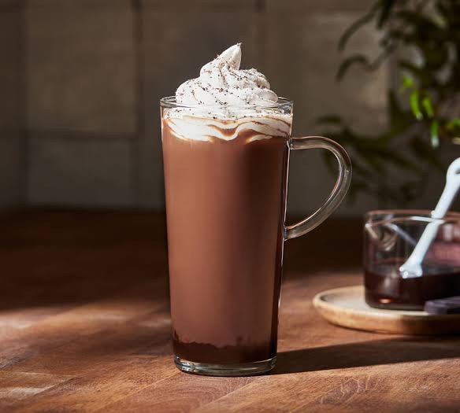

Welcome to CozyBrew Cafe
Your cozy corner in the city. Sip, relax, and unwind with our finest brews and bites.
About Us

Since 2018, CozyBrew has been serving heartwarming coffee, freshly baked pastries, and comforting vibes in the heart of Kampala.
Our Offerings

- Freshly Brewed Coffee & Tea
- Pastries and Light Meals
- Free Wi-Fi & Cozy Workspace
- Takeaway & Delivery
Contact Us
Phone: +256 703 555222
Email: hello@cozybrew.ug
Instagram: @cozybrew.cafe
Visit Us
Plot 12 Kira Road, Kamwokya, Kampala
Open: Mon-Sat | 7 AM - 9 PM